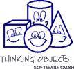

sponsored by
hosted by
major contributions by
wingS is net generation swing
WingS is a servlet development framework. It uses the models, events and event
listeners from Swing. Most Swing components have a wingS pendant with a similar
API and behaviour. Like in Swing, the components are arranged in a hierarchy of
containers, whose root container is hooked to a frame. Application development
with wingS is very similar to application development with Swing. All modern
concepts, like MVC, events and listeners and highlevel components are available.
Porting of simple Swing applications to wingS is a job of a few minutes. Ideally
it does not take more than replacing 'J's with 'S's: JTree -> STree, JMenu ->
SMenu, ...
Some features are added to the swing features to build a bridge to the web
world. E.g. using STemplateLayout simplifies the collaboration with designers
and is way easier to use than typcal tag libs.
wingS 1.0 beta is available. This release can be considered quite stable. We are using it in several projects already without problems like memory leaks, deadlocks, synchronization problems, etc.
Remaining issues are:
wingS 1.0 alpha is available. The 1.0 alpha version adds many new features, ease of use and documentation. Highlights are
wingS development was started in the end of 1998 by mercatis information systems gmbh. It is a joint effort of several people from mercatis, InnoviData GmbH and Thinking Objects. It is already used in several enterprise applications and has been heavily tested.
Feel free to contribute! Send patches / fixes / extensions to wings-developers@wings.to.com. Contact Michael Reinsch to get write access to the CVS repository.
There are also some mailing lists for wingS.
sponsored by |
hosted by |
major contributions by |
||
|  |